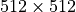

Working with Pixel Data¶
How to work with pixel data in pydicom.
Introduction¶
pydicom tends to be “lazy” in interpreting DICOM data. For example, by default it doesn’t do anything with pixel data except read in the raw bytes:
>>> from pydicom import dcmread
>>> from pydicom.data import get_testdata_file
>>> filename = get_testdata_file("MR_small.dcm")
>>> ds = dcmread(filename)
>>> ds.PixelData
b'\x89\x03\xfb\x03\xcb\x04\xeb\x04\xf9\x02\x94\x01\x7f...
PixelData contains the bytes exactly as found in the file and is not
typically in an immediately useful form as data may be stored in a variety
of different ways:
The pixel values may be signed or unsigned
There may be multiple image frames
There may be multiple planes per frame (i.e. RGB) and the order of the pixels may be different
The image data may be encoded using one of the available compression standards (
1.2.840.10008.1.2.4.50JPEG Baseline,1.2.840.10008.1.2.5RLE Lossless, etc). Encoded image data will also be encapsulated and each encapsulated image frame may be broken up into one or more fragments.
Because of the complexity in getting the raw Pixel Data bytes into
a usable form, pydicom provides a convenient way to get it:
Dataset.pixel_array.
Dataset.pixel_array¶
Warning
Dataset.pixel_array
requires NumPy.
Dataset.pixel_array returns a
numpy.ndarray containing the Pixel Data:
>>> ds.pixel_array
array([[ 905, 1019, 1227, ..., 302, 304, 328],
[ 628, 770, 907, ..., 298, 331, 355],
[ 498, 566, 706, ..., 280, 285, 320],
...,
[ 334, 400, 431, ..., 1094, 1068, 1083],
[ 339, 377, 413, ..., 1318, 1346, 1336],
[ 378, 374, 422, ..., 1369, 1129, 862]], dtype=int16)
>>> ds.pixel_array.shape
(64, 64)
If the Pixel Data is compressed then
pixel_array will return the uncompressed data,
provided the dependencies of the required pixel data handler are available. See
handling compressed image data for more
information.
NumPy can be used to modify the pixel data, but if the changes are to be saved,
they must be written back to the dataset’s PixelData element:
# example: zero anything < 300
arr = ds.pixel_array
arr[arr < 300] = 0
ds.PixelData = arr.tobytes()
ds.save_as("temp.dcm")
Some changes may require other DICOM tags to be modified. For example, if the
pixel data is reduced (e.g. a  image is collapsed to
 ) then
) then Rows and Columns should be set
appropriately. You must explicitly set these yourself; pydicom does not do so
automatically.
See Downsize MRI image using pydicom for an example.
pixel_array can also be used to pass image
data to graphics libraries for viewing. See Viewing Images for details.
Palette Color¶
Some DICOM datasets store their output image pixel values in a lookup table
(LUT), where the values in Pixel Data are the index to a corresponding
LUT entry. When a dataset’s (0028,0004) Photometric Interpretation value is
PALETTE COLOR then the
apply_color_lut() function can be used
to apply a palette color LUT to the pixel data to produce an RGB image.
from pydicom.pixel_data_handlers.util import apply_color_lut
fname = get_testdata_file("OBXXXX1A.dcm")
ds = dcmread(fname)
arr = ds.pixel_array
rgb = apply_color_lut(arr, ds)
It’s also possible to apply one of the DICOM well-known color palettes provided the bit-depth of the pixel data is 8-bit.
from pydicom.pixel_data_handlers.util import apply_color_lut
fname = get_testdata_file("OBXXXX1A.dcm")
ds = dcmread(fname)
arr = ds.pixel_array
# You could also use the corresponding well-known SOP Instance UID
rgb = apply_color_lut(arr, palette='PET')
Modality LUT or Rescale Operation¶
The DICOM Modality LUT module
converts raw pixel data values to a specific (possibly unitless) physical
quantity, such as Hounsfield units for CT. The
apply_modality_lut() function can be
used with an input array of raw values and a dataset containing a Modality LUT
module to return the converted values. When a dataset requires multiple
grayscale transformations, the Modality LUT transformation is always applied
first.
from pydicom.pixel_data_handlers.util import apply_modality_lut
fname = get_testdata_file("CT_small.dcm")
ds = dcmread(fname)
arr = ds.pixel_array
hu = apply_modality_lut(arr, ds)
VOI LUT or Windowing Operation¶
The DICOM VOI LUT module applies a
VOI or windowing operation to input values. The
apply_voi_lut() function
can be used with an input array and a dataset containing a VOI LUT module to
return values with applied VOI LUT or windowing. When a dataset contains
multiple VOI or windowing views then a particular view can be returned by
using the index keyword parameter.
When a dataset requires multiple greyscale transformations, then its assumed that the modality LUT or rescale operation has already been applied.
from pydicom.pixel_data_handlers.util import apply_voi_lut
fname = get_testdata_file("MR-SIEMENS-DICOM-WithOverlays.dcm")
ds = dcmread(fname)
arr = ds.pixel_array
out = apply_voi_lut(arr, ds, index=0)